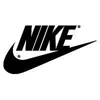

Introduction - Product Recycling
Recycling is the process of using materials at the end of their life for new products. The process avoids waste going to landfill, reduces energy usage and the impact on the environment. Recycling is commonly done in the metals, paper, glass, plastics, textiles and electronics industries (Bor, 1994). Downcycling means the recycling of material into lesser quality. Most recycled materials lose their purity or value in the recycling process, meaning the material is degraded and cannot be used for their original use. Upcycling on the other hand is increasing the value of a product through using it for a different purpose (Braungart and McDonough, 2009). The recycling process can first involve disassembly if there are materials which are toxic or of high value. Once removed the material is shredded then sorted in to common material types. The material is then used as feedstock at the start of the production process (Bor, 1994).
Benefits
- Reduction in waste going to landfill
- Conserves natural resources and extends their available life
- Reduction in mining virgin material
- Saves energy by avoiding primary extraction
- Compliance with legislation
- Reclaiming imported materials benefits the balance of payments
- Cost of recycled materials is generally lower than primary materials
Considerations
| Legislation requirements | Failure to comply can lead to fines | Satisfying and going beyond requirements can differentiate products to the consumer |
| Cost to make design change | No direct financial benefit necessarily seen from making products recyclable | Indirectly decreases material purchase prices as more recycled material will lower material costs. Aligns with corporate responsibility and can improve customer satisfaction. Compliance with legislation. |
| Redesign can change product functionality | Potential impact to aesthetics, strength, corrosion resistance etc. | More rigorous design and experimentation with new materials can retain the product functionality |
Product Design
- Minimising the volume of waste
- Reducing the spectrum of materials
- Use recyclable materials
- Disassembly of incompatible material combinations
- Toxicity (Jansen and Krause 1996)
Collection
The product can be collected for recycling by a collection service, the customer can take the product to a sorting and recycling centre, or the customer can take their products to a municipal waste collection centre (Fleischmann, 2001). Depending on the product, the manufacturer may be obligated to take-back old equipment, as is applicable for electrical, electronic and automotive manufacturers. Link
Case studies
-
BMW have designed for recycling through focusing efforts on improving the speed to dismantle the car and improve material sorting. They have designed quick drainage of car fluids, fast disabling of airbags and seat belt tensioners and labelling all materials to allow better material sorting. Link
-
Acer use screwless assembly methods, where possible use one type of plastic per component, avoid bonding and soldering materials and label components to assist in recycling. Link
-

Nike
have developed a environmentally preferred rubber, reduced several kinds of toxic chemicals in their value chain and replaced solvent for water based chemicals in all Nike brand footwear. These improvements mean a reduction of harmful chemicals being thrown away to landfill and an improved customer perception. Link